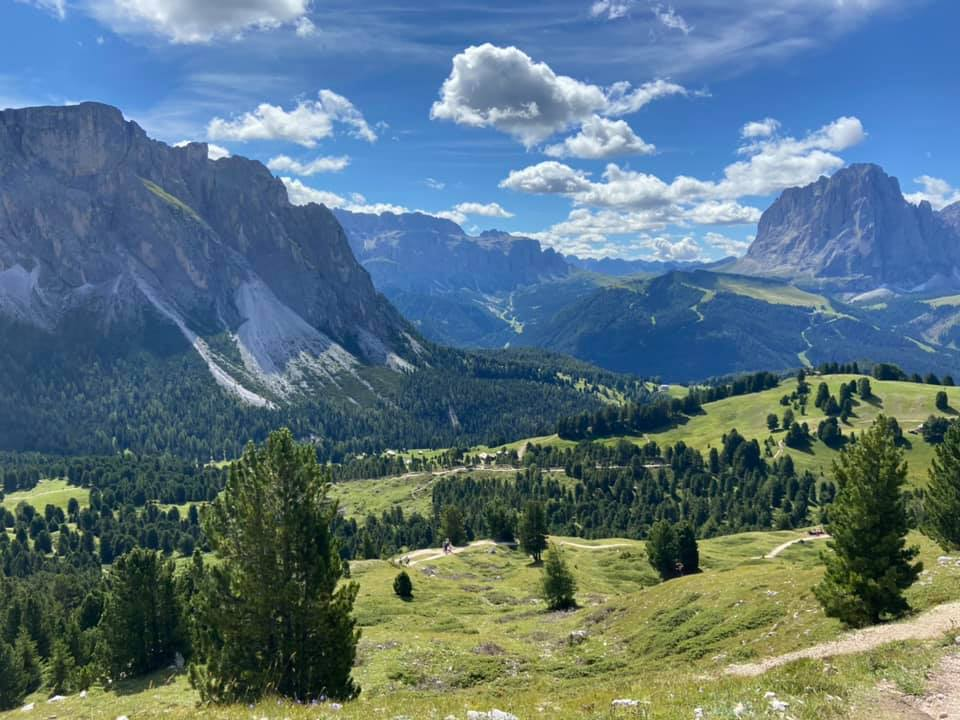

A Lullaby For The Old World Order
I realized this morning that I haven't really given an update since I was smack-dab in the middle of our lockdown here in Spain. Most of us here spent 98 days essentially locked up in our apartments, only venturing outside to quickly get some groceries or to go to a pharmacy. It was one of the most intense and invasive lockdowns of any country anywhere, and many people here really struggled to cope with it. While I didn't mind being at home, especially since I had many renovation projects on the go, the inability to even go for a walk or to get exercise was really difficult mentally, and most of us were extremely thankful when, after over three months locked up in our houses, that the rules were finally relaxed.
Since that time, Spain has entered 'the new normal', which is a new state of existence that involves mandatory mask wearing and social distancing in public. While I'm happy to do my part with helping stop the spread and save lives, I'd be lying if I said that I wasn't getting tired of wearing a mask or having to continue to refrain from personal contact from a lot of people (which in Spain, a country of hugs and kisses, is a strange experience).
For various reasons, Spain essentially shuts down in August: most people tend to take their vacations then, and with extreme temperatures, many businesses simply shutter their doors for an entire month. My original plan, pre-pandemic, was to escape in August and head somewhere cooler. Staying in Spain during normal times in August is depressing enough, but post-pandemic, with many businesses permanently closed and the rest closing for vacation, I imagined it would be even worse. So when the travel corridors opened in July around much of Europe, I decided to carry on with some of my plans, and take advantage of whatever freedoms we were being temporarily granted while they were available.
I ended up in France for about ten days, mostly sitting by myself on various terraces sipping wine and reading books. I have to say, after being locked up for so long, it was extremely therapeutic for my mental state, and the first time in ages I felt even remotely normal. After recharging some of my batteries in France, I headed to Scotland to do a walk by myself through the highlands, which lasted about a week. Then I carried on and did some additional hiking in the Dolomites, eventually returning back to Spain.

Hiking in the Dolomites
In terms of logistics, the airports were pretty quiet, and most planes I took were at least half empty, often more. Same for trains. The hotels all had freely available sanitizer, and enforced mask wearing in all the public areas. Most restaurants took your name and number when you arrived, with the promise they would call you if anyone tested positive for COVID-19. So it seems that most places had accepted this new reality, and were doing what they could to keep people safe while still trying to open up for business.
I realize that there are various people who are adamant that nobody should be travelling right now, so it wasn't an easy decision for me. But I figured if I wore masks, social distanced, stayed away from crowds, and also paid for a PCR COVID-19 test before I left, it wouldn't really be any less safe than just doing my normal routine around my apartment in Valencia. Many of my the friends I have here also were happy to take advantage of their new-found freedoms, opting to go on a trip or two while the travel corridors were still open.
For those that disagreed with my decision, it was an extremely small minority. In stark contrast, most other people messaged me publicly and privately to tell me they were happy to see some photos from around the world to remind them that one day this will all be over and hopefully life will carry-on soon. So I'm happy I managed to escape for a few weeks and take advantage of the freedoms afforded to me by countries in Europe.
I won't lie, people around here are feeling a lot of COVID-19 fatigue, myself included. I was in full support of the first lockdown, but seeing the after affects of it - the people who lost their jobs, the people who struggled mentally, the businesses that I know that had to close, or will likely close soon - I'm not sure I'd support another. I would like to think we have enough knowledge now with how to handle the pandemic without resorting to full-blown lockdowns again, while also minimizing the impact on vulnerable groups. Even the health minister here in Spain said they won't support a lockdown again - it's simply too costly, both in terms of the economy and also in terms of the well-being and mental health of the populace.
We are likely still a year away from a vaccine, and even when it's ready it sounds like there will be a defined hierarchy of people who are able to receive it. So for most of us, this is probably the new world order for the foreseeable future, one we'll have to get used to. I'll be mostly hanging out in Spain for the foreseeable future, and when the opportunity arises, hopefully heading to Canada to finally see my family after a year away (even if I have to quarantine on arrival for several weeks).
* Post title is based on a song by Matthew Good